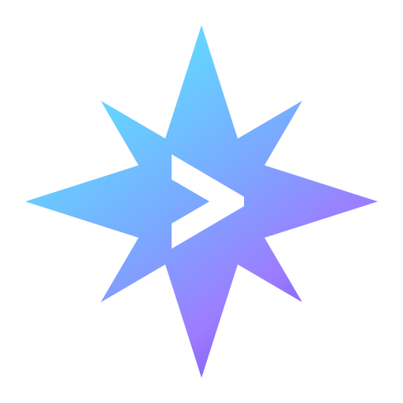
A persistent terminal with a built-in AI agentA terminal that keeps your place, and an agent that shares it
Astrum runs inside the terminal you already use, locally or over SSH. Close the window and everything keeps running; come back and it is all there. Click anything, split panes, and ask an agent that works in the same shell you do, where you can watch it and take over.
curl --proto '=https' --tlsv1.2 -fsSL https://raw.githubusercontent.com/robert-mcdermott/astrum/main/install.sh | shVersion 0.6.0, open source. One file, nothing else to install. macOS on Apple silicon, Linux on x86-64 and ARM64.
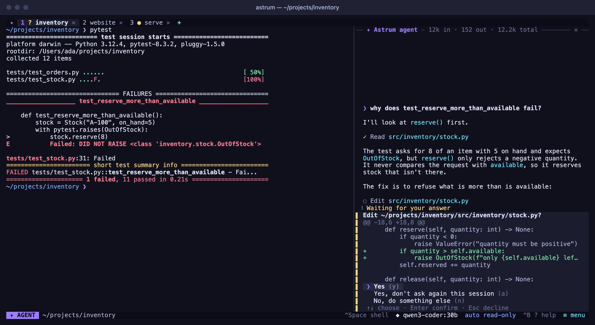
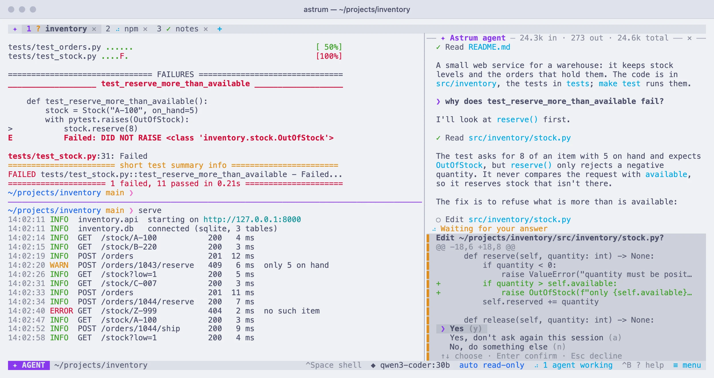
What Astrum does
Astrum is a session manager for the terminal: tabs, panes and shells that keep running in the background, with an AI agent built in. It changes nothing about your shell, your prompt or your colors.
Feels like your own shell
Run astrum and you are in your usual zsh, bash or fish, with your own prompt and colors, plus a tab bar.
Sessions survive
Close the window and come back later: every tab, running program and scrollback is still there. After a reboot the tabs, splits and directories come back too.
Made for the mouse too
Click tabs, + and ✕, drag dividers, scroll with the wheel, right-click for a menu, and find everything else in ≡ menu. Keys are there for people who want them.
Room to work
Split a tab into panes, search the scrollback, open links, see the pictures programs print, and look at one session from several windows.
Other machines, kept
Open a tab on a server over your own ssh: its shells stay there, so a dropped connection or a closed laptop loses nothing.
Any model
Ollama and any OpenAI-compatible endpoint, Anthropic, and Amazon Bedrock. Switch with /model; keys are kept in the system's keychain.
It works in your shell, where you can see it
Press Ctrl+Space or click the SHELL chip and ask. The agent reads what is on screen, proposes commands and runs them in your real session. You see each one before it runs, and you decide how much it may do on its own.
- Ask first, run read-only commands by itself, or work on autopilot
- Commands you always allow, and commands it may never run
- Keys and passwords hidden from the model before anything is sent
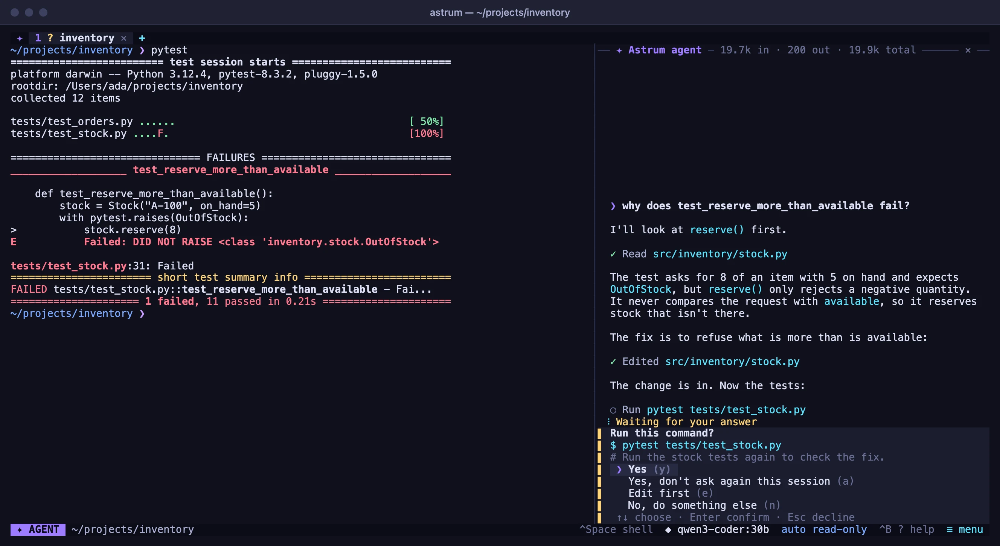
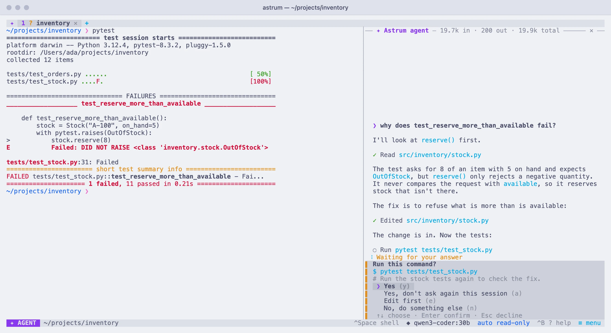
Ask without leaving the shell
Type # and a question at your prompt and the agent answers beside it. When a command fails, click explain or fix in the status bar; when one is taking long, watch has the agent keep an eye on it.
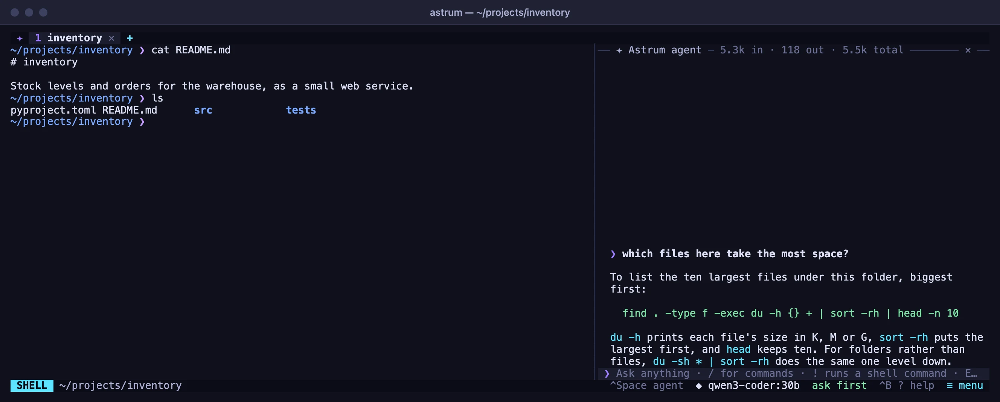
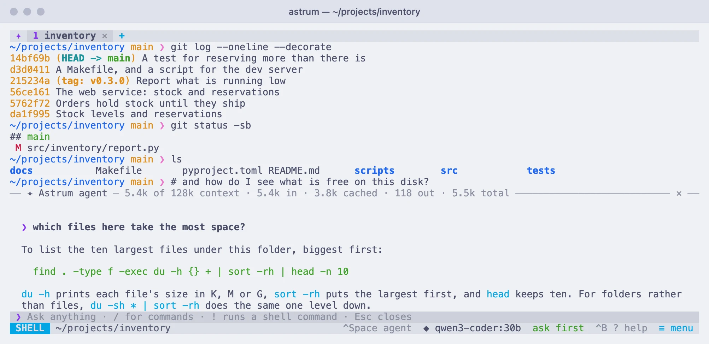
Every agent at a glance
Each tab has an agent of its own. One list shows what each is doing, which ones are asking you something, and which have finished. Answer from the list, or click to go there. Your terminal is told when an agent in another tab needs you.
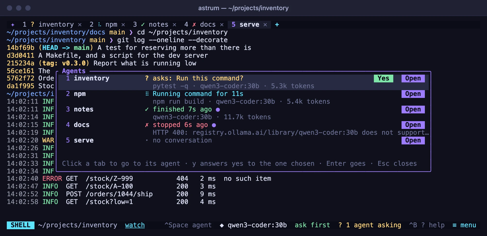
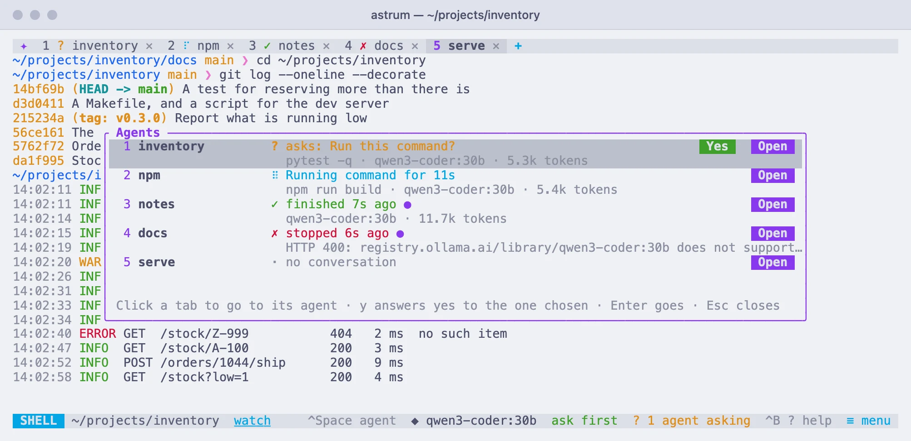
MCP servers and skills
Give the agent the tools of MCP servers, on your machine or on the network, signing in with OAuth where a server asks. Skills, folders with a SKILL.md, teach it how your projects do things, and are loaded only when they fit.
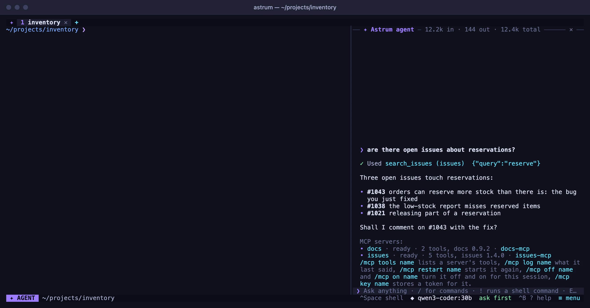
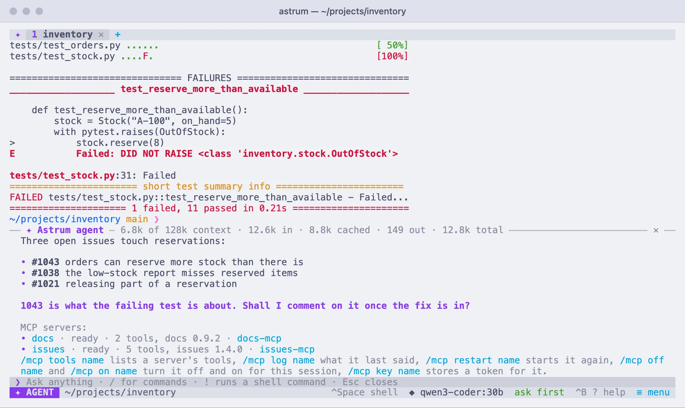
Split, drag, zoom, and keep going
Split a tab side by side or one above the other, drag the dividers, zoom one pane to fill the tab and back. Find text in the scrollback, select to copy, and right-click a link to open it.
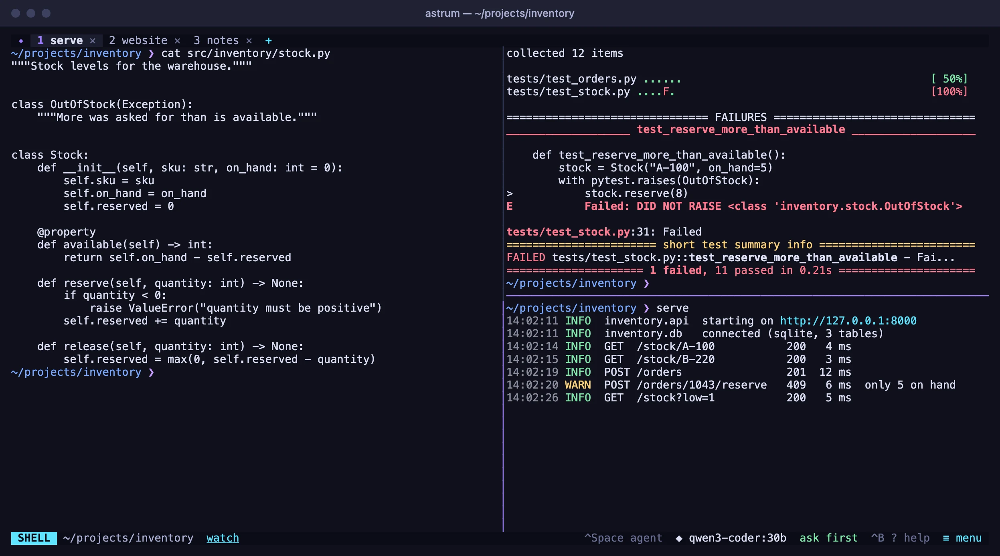
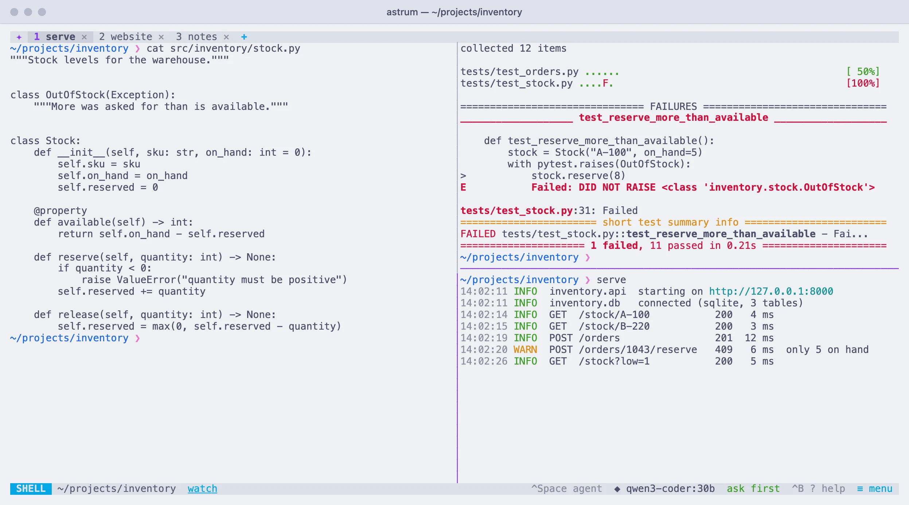
A tab on a server, kept there
Open a tab on another machine over your own ssh. Its shells are kept on that machine, so a dropped connection, a closed laptop or a restart here loses nothing: the tab picks up where it was. The agent works there with all its tools.
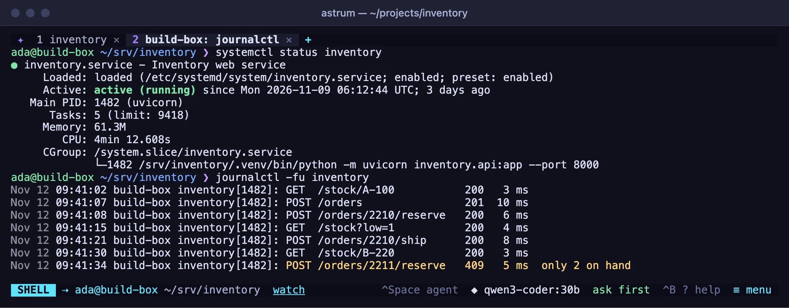
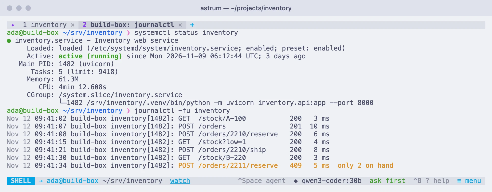
Your colors, or one of 21
Out of the box Astrum uses your terminal's own colors and changes nothing about how it looks. 21 themes are built in, from calm to neon, shown live as you move through them. Or make one of your own.
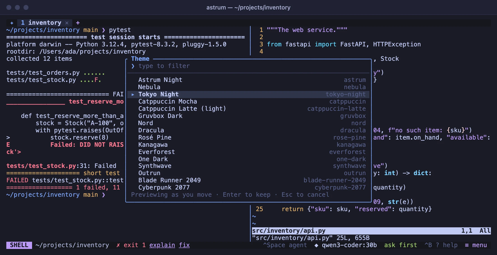
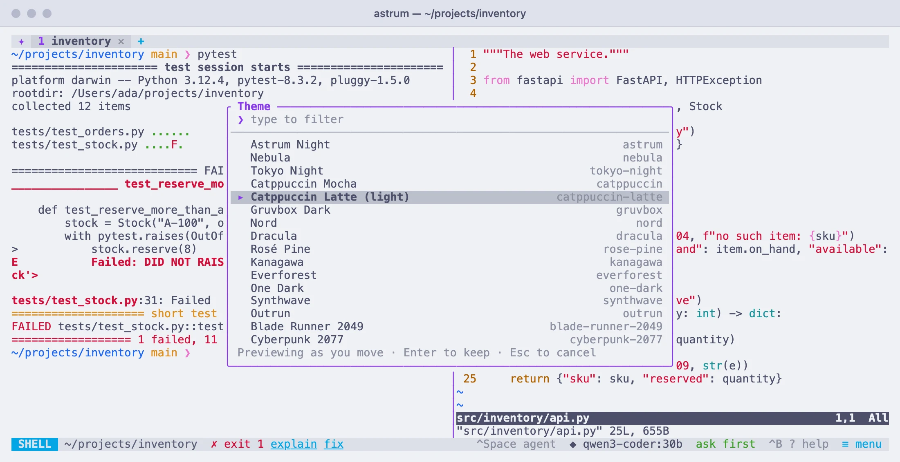
Install
The installer downloads the file for your machine from the latest release, checks it against the release's checksums, and puts it in ~/.local/bin. It does not use sudo or change anything else.
curl --proto '=https' --tlsv1.2 -fsSL https://raw.githubusercontent.com/robert-mcdermott/astrum/main/install.sh | sh